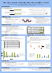
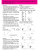
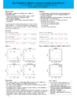
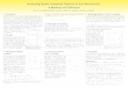
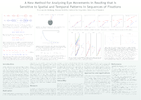
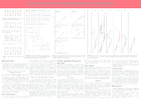

Dr. Titus von der Malsburg
I am a visiting professor for experimental and computational psycholinguistics at the Department of Linguistics of the University of Potsdam. I also have a position as a research affiliate at the Department of Brain and Cognitive Science at the MIT. Before coming to Potsdam, I conducted research at the Department of Psychology and the Department of Linguistics at UC San Diego and at the Department of Experimental Psychology at University of Oxford.
Address:
Department of Linguistics
Campus Golm, House 14, room 2.36
Karl-Liebknecht-Straße 24-25
14476 Potsdam
Profiles:
Twitter
Github
Google Scholar
News
- With my students and collaborators I’m contributing five posters to CUNY 2018:
- Laurinavichyute, A., & von der Malsburg, T. (2018). Agreement attraction in grammatical sentences.
- Laurinavichyute, A., & von der Malsburg, T. (2018). Semantic attraction in sentence processing.
- Stone, K., Vasishth, S., & von der Malsburg, T. (2018). Expectations and prediction in sentence comprehension: german particle verbs as a test case.
- Boyce, V., von der Malsburg, T., Poppels, T., & Levy, R. (2018). Implicit gender biases in the production and comprehension of pronominal references.
- Morgan, A., von der Malsburg, T., Ferreira, V., & Wittenberg, E. (2018). This is the structure that we wonder why anyone produces it: Resumptive pronouns in english hinder comprehension.
- Laurinavichyute, A., & von der Malsburg, T. (2018). Agreement attraction in grammatical sentences.
Publications
Manuscripts
von der Malsburg, T., Poppels, T., and Levy, R. (2018). Gender bias in linguistic preferences during the 2016 U.S. presidential campaign.
Schotter, E., von der Malsburg, T., and Leinenger, M. (2018). The impact of forced fixations on word recognition: Dissociation of oculomotor behavior and linguistic processin. Under review at Journal of Experimental Psychology: Learning, Memory, and Cognition.
Journal articles
Schotter, E., Leinenger, M., and von der Malsburg, T. (2017). When your mind ignores what your eyes see: How forced fixations lead to comprehension illusions in reading. Psychonomic Bulletin & Review. In press. [ bib | DOI ]
The phenomenon of forced fixations suggests that readers sometimes fixate a word (due to oculomotor constraints) even though they intended to skip it (due to parafoveal cognitive-linguistic processing). We investigate whether this leads readers to look directly at a word but not pay attention to it. We used a gaze-contingent boundary paradigm to dissociate parafoveal and foveal information (e.g., the word phone changed to scarf once the reader's eyes moved to it) and asked questions about the sentence to determine which one the reader encoded. When the word was skipped or fixated only briefly (i.e., up to 100 ms) readers were more likely to report reading the parafoveal than the fixated word, suggesting that there are cases in which readers look directly at a word but their minds ignore it, leading to the illusion of reading something they did not fixate.
Metzner, P., von der Malsburg, T., Vasishth, S., and Rösler, F. (2016). The importance of reading naturally: Evidence from combined recordings of eye movements and electric brain potentials. Cognitive Science, 41(S6):1232–1263. [ bib | DOI ]
How important is the ability to freely control eye movements for reading comprehension? And how does the parser make use of this freedom? We investigated these questions using coregistration of eye movements and event-related brain potentials (ERPs) while participants read either freely or in a computer-controlled word-by-word format (also known as RSVP). Word-by-word presentation and natural reading both elicited qualitatively similar ERP effects in response to syntactic and semantic violations (N400 and P600 effects). Comprehension was better in free reading but only in trials in which the eyes regressed to previous material upon encountering the anomaly. A more fine-grained ERP analysis revealed that these regressions were strongly associated with the well-known P600 effect. In trials without regressions, we instead found sustained centro-parietal negativities starting at around 320 ms post-onset, however, these negativities were only found when the violation occurred in sentence-final position. Taken together, these results suggest that the sentence processing system engages in strategic choices: In response to words that don’t match built-up expectations, it can either explore alternative interpretations (reflected by regressions, P600 effects, and good comprehension) or pursue a "good-enough" processing strategy that tolerates a deficient interpretation (reflected by progressive saccades, sustained negativities, and relatively poor comprehension).
von der Malsburg, T. and Angele, B. (2016). False positives and other statistical errors in standard analyses of eye movements in reading. Journal of Memory and Language, 94:119-133. [ bib | DOI | .pdf ]
In research on eye movements in reading, it is common to analyze a number of canonical dependent measures to study how the effects of a manipulation unfold over time. Although this gives rise to the well-known multiple comparisons problem, i.e. an inflated probability that the null hypothesis is incorrectly rejected (Type I error), it is accepted standard practice not to apply any correction procedures. Instead, there is a widespread belief that corrections are not necessary because the increase in false positives is too small to matter. To our knowledge, no formal argument has ever been presented to justify this assumption. Here, we report a computational investigation of this issue using Monte Carlo simulations. Our results show that, contrary to conventional wisdom, false positives are increased to unacceptable levels when no corrections are applied. Our simulations also show that counter-measures like the Bonferroni correction keep false positives in check while reducing statistical power only moderately. Hence, there is little reason why such corrections should not be made a standard requirement. Further, we discuss two statistical illusions that can arise when statistical power is too low, and we show how power can be improved to prevent these illusions. In sum, our work renders a detailed picture of the various types of statistical errors than can occur in studies of reading behavior and we give concrete guidance about how these errors can be avoided.
von der Malsburg, T., Kliegl, R., and Vasishth, S. (2015). Determinants of scanpath regularity in reading. Cognitive Science, 39(7):1675-1703. [ bib | DOI | .pdf ]
Scanpaths have played an important role in classic research on reading behavior. Nevertheless, they have largely been neglected in later research—perhaps also due to a lack of suitable analytical tools. Recently, von der Malsburg and Vasishth (2011) proposed a new measure for quantifying differences between scanpaths and demonstrated that this measure can recover effects that were missed with the traditional eyetracking measures. However, the sentences used in that study were difficult to process and scanpath effects accordingly strong. The purpose of the present study was to test the validity, sensitivity, and scope of applicability of the scanpath measure using simple sentences that are typically read straight from left to right. We derived predictions for the regularity of scanpaths from the literature on oculomotor control, sentences processing, and cognitive aging and tested these predictions using the scanpath measure and a large database of eye movements (N=230). All predictions were confirmed: sentences with short words and syntactically more difficult sentences elicited more irregular scanpaths. Also, older readers produced more irregular scanpaths than younger readers. In addition, we found an effect that was not reported earlier: syntax had a smaller influence on the eye movements of older readers than on those of young readers. We discuss this interaction of syntactic parsing cost with age in terms of shifts in processing strategies and a decline of executive control as readers age. Overall, our results demonstrate the validity and sensitivity of the scanpath measure and thus establish it as a productive and versatile tool for reading research.
Metzner, P., von der Malsburg, T., Vasishth, S., and Rösler, F. (2015). Brain responses to world-knowledge violations: A comparison of stimulus- and fixation-triggered event-related potentials and neural oscillations. Journal of Cognitive Neuroscience, 27(5):1017-1028. [ bib | DOI | .pdf ]
Recent research has shown that brain potentials time-locked to fixations in natural reading can be similar to brain potentials recorded during rapid serial visual presentation (RSVP). We attempted two replications of Hagoort, Hald, Bastiaansen, and Petersson [Hagoort, P., Hald, L., Bastiaansen, M., & Petersson, K. M. Integration of word meaning and world knowledge in language comprehension. Science, 304, 438–441, 2004] to determine whether this correspondence also holds for oscillatory brain responses. Hagoort et al. reported an N400 effect and synchronization in the theta and gamma range following world knowledge violations. Our first experiment (n = 32) used RSVP and replicated both the N400 effect in the ERPs and the power increase in the theta range in the time–frequency domain. In the second experiment (n = 49), participants read the same materials freely while their eye movements and their EEG were monitored. First fixation durations, gaze durations, and regression rates were increased, and the ERP showed an N400 effect. An analysis of time–frequency representations showed synchronization in the delta range (1–3 Hz) and desynchronization in the upper alpha range (11–13 Hz) but no theta or gamma effects. The results suggest that oscillatory EEG changes elicited by world knowledge violations are different in natural reading and RSVP. This may reflect differences in how representations are constructed and retrieved from memory in the two presentation modes.
von der Malsburg, T. and Vasishth, S. (2013). Scanpaths reveal syntactic underspecification and reanalysis strategies. Language and Cognitive Processes, 28(10):1545-1578. [ bib | DOI | .pdf ]
What theories best characterize the parsing processes triggered upon encountering ambiguity, and what effects do these processes have on eye movement patterns in reading? The present eye-tracking study, which investigated processing of attachment ambiguities of an adjunct in Spanish, suggests that readers sometimes underspecify attachment to save memory resources, consistent with the good-enough account of parsing. Our results confirm a surprising prediction of the good-enough account: high-capacity readers commit to an attachment decision more often than low-capacity participants, leading to more errors and a greater need to reanalyze in garden-path sentences. These results emerged only when we separated functionally different types of regressive eye movements using a scanpath analysis; conventional eye-tracking measures alone would have led to different conclusions. The scanpath analysis also showed that rereading was the dominant strategy for recovering from garden-pathing. Our results may also have broader implications for models of reading processes: reanalysis effects in eye movements occurred late, which suggests that the coupling of oculo-motor control and the parser may not always be as tight as assumed in current computational models of eye movements control in reading.
Vasishth, S., von der Malsburg, T., and Engelmann, F. (2013). What eye movements can tell us about sentence comprehension. Wiley Interdisciplinary Reviews: Cognitive Science, 4(2):125-134. [ bib | DOI | .pdf ]
Eye movement data have proven to be very useful for investigating human sentence processing. Eyetracking research has addressed a wide range of questions, such as recovery mechanisms following garden-pathing, the timing of processes driving comprehension, the role of anticipation and expectation in parsing, the role of semantic, pragmatic, and prosodic information, and so on. However, there are some limitations regarding the inferences that can be made on the basis of eye movements. One relates to the nontrivial interaction between parsing and the eye movement control system which complicates the interpretation of eye movement data. Detailed computational models that integrate parsing with eye movement control theories have the potential to unpack the complexity of eye movement data and can therefore aid in the interpretation of eye movements. Another limitation is the difficulty of capturing spatiotemporal patterns in eye movements using the traditional word-based eyetracking measures. Recent research has demonstrated the relevance of these patterns and has shown how they can be analyzed. In this review, we focus on reading, and present examples demonstrating how eye movement data reveal what events unfold when the parser runs into difficulty, and how the parsing system interacts with eye movement control. WIREs Cogn Sci 2013, 4:125–134. doi: 10.1002/wcs.1209For further resources related to this article, please visit the WIREs website.
Marusch, T., von der Malsburg, T., Bastiaanse, R., and Burchert, F. (2013). Tempusmorphologie bei deutschen Agrammatikern: Die Sprachproduktion von regulären, irregulären und gemischten Verben. In Spektrum Patholinguistik, volume 6, pages 219-223, Potsdam, Germany. Universitätsverlag Potsdam. [ bib ]
Seit langem wird debattiert, wie reguläre und irreguläre Vergangenheitsformen repräsentiert und verarbeitet werden (Rumelhart & McClelland, 1986; Pinker & Prince, 1988). Das Dual- Mechanism-Modell (DMM; Pinker & Prince, 1988; Clahsen, 1999) nimmt an, dass reguläre und irreguläre Formen von zwei verschiedenen Mechanismen verarbeitet werden. Vertreter des Single-Mechanism Ansatzes gehen alternativ von einem einzigen Mechanismus aus, der sowohl der Verarbeitung von regulären als auch irregulären Verben dient.
Marusch, T., von der Malsburg, T., Bastiaanse, R., and Burchert, F. (2012). Tense morphology in german agrammatism: The production of regular, irregular and mixed verbs. The Mental Lexicon, 7(3):351-380. [ bib | DOI | .pdf ]
This study investigates tense morphology in agrammatic aphasia and the predictions of two accounts on processing of regular and irregular verbs: the Dual Mechanism model, that is, for aphasic data, the Declarative/Procedural model, and the Single Mechanism approach. The production of regular, irregular and mixed verbs in the present, simple past and past participle (present perfect) was tested in German by means of a sentence completion task with a group of seven speakers with agrammatic aphasia. The results show a difference between regular verbs and irregular verbs. Mixed verbs were equally difficult as irregular verbs. A frequency effect was found for irregular verbs but not for regular and mixed verbs. A significant difference among the correctness scores for present tense and simple past forms was found. Simple past and past participle were significantly more difficult than present tense. Error types were characterized by pure infinitive responses and time reference errors. Neither of the above accounts is sufficient to explain these results. Correctness scores and error patterns for mixed verbs suggest that such minor lexical patterns can be useful in finding new evidence in the debate on morphological processing. The findings also highlight time reference as well as language specific characteristics need to be taken into consideration.
von der Malsburg, T., Vasishth, S., and Kliegl, R. (2012). Scanpaths in reading are informative about sentence processing. In Michael Carl, P. B. and Choudhary, K. K., editors, Proceedings of the First Workshop on Eye-tracking and Natural Language Processing, pages 37-53, Mumbai, India. The COLING 2012 organizing committee. [ bib | .pdf ]
von der Malsburg, T. and Vasishth, S. (2011). What is the scanpath signature of syntactic reanalysis? Journal of Memory and Language, 65(2):109-127. [ bib | DOI | .pdf ]
Which repair strategy does the language system deploy when it gets garden-pathed, and what can regressive eye movements in reading tell us about reanalysis strategies? Several influential eye-tracking studies on syntactic reanalysis (Frazier & Rayner, 1982; Meseguer,Carreiras, & Clifton, 2002; Mitchell, Shen, Green, & Hodgson, 2008) have addressed this question by examining scanpaths, i.e., sequential patterns of eye fixations. However, in the absence of a suitable method for analyzing scanpaths, these studies relied on simplified dependent measures that are arguably ambiguous and hard to interpret. We address the theoretical question of repair strategy by developing a new method that quantifies scanpath similarity. Our method reveals several distinct fixation strategies associated with reanalysis that went undetected in a previously published data set (Meseguer et al., 2002). One prevalent pattern suggests re-parsing of the sentence, a strategy that has been discussed in the literature (Frazier & Rayner, 1982); however, readers differed tremendously in how they orchestrated the various fixation strategies. Our results suggest that the human parsing system non-deterministically adopts different strategies when confronted with the disambiguating material in garden-path sentences.
von der Malsburg, T., Baumann, T., and Schlangen, D. (2009). TELIDA: A package for manipulation and visualization of timed linguistic data. In Proceedings of the SIGDIAL 2009 Conference: The 10th Annual Meeting of the Special Interest Group on Discourse and Dialogue, pages 302-305, London, UK. Association for Computational Linguistics. [ bib | .pdf ]
Conference talks
Morgan, A., von der Malsburg, T., Ferreira, V., and Wittenberg, E. (2018). This is the structure that we wonder why anyone produces it: Resumptive pronouns in English hinder comprehension. In Pickering, M., Crocker, M., Hartsuiker, R., Ferreira, V., Branagan, H., and Mishra, R., editors, Proceedings of the 1th Architectures and Mechanisms for Language Processing Conference - Asia, Hyderabad, Telangana, India. University of Hyderabad. [ bib ]
Schotter, L., Leinenger, M., and von der Malsburg, T. (2017b). The impact of forced fixations on word recognition: Dissociation ofoculomotor behavior and linguistic processing. In Deubel, H., Nuthmann, A., Martinez-Conde, S., Radach, R., Everling, S., and Ettinger, U., editors, Proceedings of the 19th European Conference on Eye Movements (ECEM), Wuppertal, Germany. Journal of Eye Movement Research. [ bib ]
Easy parafoveal processing not only causes word skipping, but also forced fixations on words, i.e., short single fixations, due to pre-initiated forward saccades (Schotter & Leinenger; 2016), which can explain standard preview benefit effects (cf. linguistic integration accounts: Rayner, 2009) and reversed preview benefit effects—longer fixations following identical than higher frequency unrelated previews. An open question is whether, following forced fixations, linguistic processing proceeds from parafoveal information that initiated the saccade or higher fidelity foveal information . Twenty-four subjects read 150 sentences in the boundary paradigm (Rayner, 1975) with orthogonally crossed high- and low-frequency preview and target words that were both plausible at the point of the target region and intervening buffer region and then neither/one/both became implausible at a sentence-final critical region. We replicated Schotter and Leinenger (2016) and found that regressions out of the buffer region showed only an effect of the display change while regressions out of the critical region showed only an effect of target word plausibility. These data suggest a dissociation in the reading system: immediate oculomotor behavior is based on “hedged bets” initiated by low-acuity parafoveal information, emerging linguistic processing occurs mostly based on high-acuity foveal vision, and display changes are sometimes immediately detected.
von der Malsburg, T., Poppels, T., and Levy, R. (2017b). The president gave her inauguration speech. No, they didn’t! The interaction of explicit world knowledge, implicit gender stereotypes, and discourse expectations. In van Bergen, G. and Spenader, J., editors, Proceedings of Discourse Expectations: Theoretical, Experimental and Computational perspectives (DETEC 2017), Nijmegen, Netherlands. Max Planck Institute for Psycholinguistics, Max Planck Institute for Psycholinguistics. [ bib ]
von der Malsburg, T., Poppels, T., and Levy, R. (2017c). The president will give her inauguration speech: Explicit belief and implicit expectations in language production and comprehension. In Gibson, E., Blank, I., Fedorenko, E., Futrell, R., Kline, M., and Ryskin, R., editors, Proceedings of the 30th Annual CUNY Conference on Human Sentence Processing, Boston, MA, USA. Massachusetts Institute of Technology. [ bib | .pdf ]
Schotter, E., Leinenger, M., and von der Malsburg, T. (2017a). Parafoveal and foveal information serve different purposes in reading: Parafoveal is used for saccade programming, foveal for comprehension. In Gibson, E., Blank, I., Fedorenko, E., Futrell, R., Kline, M., and Ryskin, R., editors, Proceedings of the 30th Annual CUNY Conference on Human Sentence Processing, Boston, MA, USA. Massachusetts Institute of Technology. [ bib | .pdf ]
von der Malsburg, T., Poppels, T., and Levy, R. (2017a). The president gave her inauguration speech: Explicit belief and implicit expectations in language production and comprehension. In Baptista, M. and Coetzee, A., editors, 91th Annual Meeting of the Linguistics Society of America, Austin, Texas. Linguistic Society of America. [ bib ]
Schotter, L., Leinenger, M., and von der Malsburg, T. (2016). Dissociating influences of parafoveal and foveal information on reading: Forced fixations and comprehension. In Maki, R., editor, Proceedings of the 21th Conference of the Psychonomic Scociety, Boston, Massachusetts. Psychonomic Society. [ bib ]
Angele, B. and von der Malsburg, T. (2016). Multiple comparisons and false positive rates in eye tracking studies of reading behaviour. In Bajo, M. T., editor, Proceedings of the International Meeting of the Psychonomic Society, page 112, Granada, Spain. Psychonomic Society. [ bib ]
Angele, B. and von der Malsburg, T. (2015a). False-positive rates in eyetracking studies with multiple dependent measures. In Perea, M., Vergara-Martínez, M., Rosa Martínez, E. M., Tejero, P., Roca Ruíz, J., Fajardo, I., Salmerón, L., and Abu Mallouh, R., editors, Proceedings of the 12th Symposium of Psycholinguistics, Valencia, Spain. Universitat de Valencia. [ bib ]
von der Malsburg, T. and Angele, B. (2015). The rules of statistics make no exception for reading research: False positive rates in eyetracking studies of reading behavior. In Gatt, A. and Mitterer, H., editors, Proceedings of the 21th Architectures and Mechanisms for Language Processing Conference (AMLaP), Valetta, Malta. University of Malta. [ bib ]
Angele, B. and von der Malsburg, T. (2015b). Multiple comparisons and false positive rates in eye tracking studies of reading behavior. In Gomez, P. and Krenzer, W., editors, Proceedings of the Pre-Psychonomics Word Recognition Conference, Chicago, IL, USA. DePaul University, Chicago, DePaul University, Chicago. [ bib ]
Metzner, P., von der Malsburg, T., Vasishth, S., and Rösler, F. (2014). The relationship between regressive saccades and the P600 effect: Evidence from concurrent eye movement and EEG recordings. In Patson, N., Speer, S., Squires, L., Turnbull, R., Wagner, L., and Walker, A., editors, Proceedings of the 27th Annual CUNY Conference on Human Sentence Processing, Columbus, OH, USA. Ohio State University. [ bib ]
von der Malsburg, T., Vasishth, S., and Kliegl, R. (2013). Scanpaths in reading are tractable and informative. In Holmqvist, K., Mulvey, F., and Johansson, R., editors, Proceedings of the 17th European Conference on Eye Movements (ECEM), page 132, Lund, Sweden. Journal of Eye Movement Research. [ bib ]
Pioneering work in reading research has shown that scanpaths in reading can be informative about sentences processing (Frazier, Rayner, 1982). Nevertheless, scanpaths have not gained much traction in reading research. One reason for that may have been a lack of suitable analytical tools. Here, we summarize three recent studies in which we used a new scanpath measure to analyze gaze data from two experimental studies (von der Malsburg, Vasishth, 2011, 2012) and one corpus study (von der Malsburg, Kliegl, Vasishth, under revision). The experiments investigated how readers process temporarily ambiguous sentences. We showed that readers do not always commit to one of the alternative interpretations, and that readers with low working-memory capacity do so less often. Contrary to what was reported earlier, we found that reparsing instead of targeted repair is a common strategy to recover from incorrect interpretations. Interestingly, these results did not emerge in an analysis using traditional word-based eyetracking measures showing their limitations. In the corpus study, we demonstrated how syntax, oculomotor constraints, and age of reader jointly determine the regularity of scanpaths. We argue that, taken together, these results establish the scanpath as an informative and tractable object of investigation in reading research.
Metzner, P., von der Malsburg, T., Vasishth, S., and Rösler, F. (2013a). Oscillatory brain dynamics differ between natural reading and serial presentation. In Holmqvist, K., Mulvey, F., and Johansson, R., editors, Proceedings of the 17th European Conference on Eye Movements (ECEM), page 187, Lund, Sweden. Journal of Eye Movement Research. [ bib ]
Recent research (Dimigen et al., JEP:G, 2011; Kretzschmar et al., NeuroReport, 2009) shows that fixation-related potentials (FRPs) yield similar results as brain potentials recorded during rapid serial visual presentation (RSVP). We conducted an experiment to see if this correspondence also holds for oscillatory brain dynamics. Participants (N=48) read true ("The Thames flows through London") and false factual statements ("The Hudson flows through London"). Such violations are known to elicit an N400, a negative-going deflection with a peak around 400 ms, and increased theta and gamma activity (Hagoort, Science, 2004). As expected, we see an N400 in the FRP and increased fixation durations and regression rates in the eye movement record. Moreover, a cluster-permutation test (Maris & Oostenveld, J Neurosci Methods, 2007) for fixation-related power spectra shows synchronization in the delta range (1-3 Hz) and desynchronization in the upper alpha range (11-13 Hz) but no theta or gamma effects. This is at odds with prior findings and suggests that fixation-related oscillatory EEG changes are not fully comparable to those observed in RSVP. One reason for the diverging results may lie in different processing demands: In RSVP, readers must retrieve earlier parts of the sentence from memory because they cannot make regressions.
Metzner, P., von der Malsburg, T., Vasishth, S., and Rösler, F. (2013b). World-knowledge violations elicit different rhythmic brain activity in natural reading and serial presentation. In Frenck-Mestre, C., Alario, F.-X., Nguyen, N., Blache, P., and Meunier, C., editors, Proceedings of the 19th Architectures and Mechanisms for Language Processing Conference (AMLaP), page 32, Marseilles, France. Aix-Marseille Université. [ bib ]
Recent studies (Dimigen et al., JEP:G, 2011; Kretzschmar et al., NeuroReport, 2009) demonstrated the feasibility of investigating fixation-related potentials (FRPs) and that the results are similar to brain potentials recorded during rapid serial visual presentation (RSVP). We conducted an experiment to assess if this correspondence also holds for rhythmic brain activity. To pit our results against ults gained with RSVP, the experiment used sentences that are known to produce reliable effects both in the time domain and in the frequency domain (Hagoort, Science, 2004). Participants (N=48) read freely through true ('The Thames flows through London') and false statements ('The Hudson flows through London'). Hagoort et al. report an N400, a negative-going deflection in the ERP with a peak around 400 ms, as well as increased theta (4-7 Hz) and gamma (30-70 Hz) activity. During our experiment, participants' eye movements were monitored and their EEG was recorded from 32 electrodes and later evaluated contingent to the first fixation on the critical word. We analyzed the canonical eye-tracking measures with linear mixed-effects models and the EEG with cluster-permutation tests (Maris & Oostenveld, J Neurosci Methods, 2007) to control for multiple comparisons. As expected, we observed a negativity in the FRP with a centro-parietal distribution and a peak latency of approximately 400 ms. Also as expected, this N400 lined up with increased first fixation durations, gaze durations, and regression rates in the eye movement record (Dambacher & Kliegl, Brain Res, 2007). Crucially, fixation-related power spectra showed synchronization in the delta range (1-3 Hz) at central electrodes and desynchronization in the upper alpha range (11-13 Hz) at occipito-parietal sites relative to a pre-fixation baseline. None of these effects is reported by Hagoort et al. which suggests that fixation-related EEG changes are at least not fully comparable to those observed in RSVP. One reason for the diverging results could lie in different processing demands: In RSVP, readers must retrieve earlier parts of the sentence from working memory because they cannot make regressions. Increased theta activity reflects this more effortful memory access (Klimesch, Brain Res Rev, 1999). In natural reading, readers can easily move their eyes back to resolve the processing difficulty which facilitates memory access. Our findings question the comparability of results acquired with serial presentation vs. natural reading.
Paape, D., Vasishth, S., and von der Malsburg, T. (2013). Local coherence and digging-in effects in german. In Ferreira, F., Almor, A., and den Ouden, D.-B., editors, Proceedings of the 26th Annual CUNY Conference on Human Sentence Processing, page 199, Columbia, SC, USA. University of South Carolina. [ bib ]
von der Malsburg, T., Vasishth, S., and Kliegl, R. (2012). Scanpaths in reading are informative about sentence processing. In Michael Carl, P. B. and Choudhary, K. K., editors, Proceedings of the First Workshop on Eye-tracking and Natural Language Processing, pages 37-53, Mumbai, India. The COLING 2012 organizing committee. [ bib | .pdf ]
von der Malsburg, T. and Vasishth, S. (2011). Strategies for dealing with attachment ambiguities in Spanish. In Proceedings of the 10th Symposium of Psycholinguistics, San Sebastián, Spain. Basque Center on Cognition, Brain and Language. [ bib ]
von der Malsburg, T. and Vasishth, S. (2010). Reanalysis strategies in temporarily ambiguous sentence - A scanpath analysis. In Bemis, D., Brennan, J., Dikker, S., Livitz, I., Marantz, A., McElree, B., Pylkkänen, L., and Rabagliati, H., editors, Proceedings of the 23th Annual CUNY Conference on Human Sentence Processing, page 32, New York City, NY, USA. New York University. [ bib ]
von der Malsburg, T. and Vasishth, S. (2009). Individual differences in scanpaths and reanalysis strategies while reading temporarily ambiguous sentences. In Liversedge, S., editor, Proceedings of the 15th European Conference on Eye Movements (ECEM), Southampton, UK. Journal of Eye Movement Research. [ bib ]
Conference posters
Laurinavichyute, A. and von der Malsburg, T. (2018b). Semantic attraction in sentence processing. In Ferreira, F., Henderson, J., Swaab, T., and Traxler, M., editors, Proceedings of the 31th Annual CUNY Conference on Human Sentence Processing, Davis, CA, USA. UC Davis. [ bib ]
Laurinavichyute, A. and von der Malsburg, T. (2018a). Agreement attraction in grammatical sentences. In Ferreira, F., Henderson, J., Swaab, T., and Traxler, M., editors, Proceedings of the 31th Annual CUNY Conference on Human Sentence Processing, Davis, CA, USA. UC Davis. [ bib ]
Stone, K., Vasishth, S., and von der Malsburg, T. (2018). Expectations and prediction in sentence comprehension: German particle verbs as a test case. In Ferreira, F., Henderson, J., Swaab, T., and Traxler, M., editors, Proceedings of the 31th Annual CUNY Conference on Human Sentence Processing, Davis, CA, USA. UC Davis. [ bib ]
Morgan, A., von der Malsburg, T., Ferreira, V., and Wittenberg, E. (2018). This is the structure that we wonder why anyone produces it: Resumptive pronouns in english hinder comprehension. In Ferreira, F., Henderson, J., Swaab, T., and Traxler, M., editors, Proceedings of the 31th Annual CUNY Conference on Human Sentence Processing, Davis, CA, USA. UC Davis. [ bib ]
Boyce, V., von der Malsburg, T., Poppels, T., and Levy, R. (2018). Implicit gender biases in the production and comprehension of pronominal references. In Ferreira, F., Henderson, J., Swaab, T., and Traxler, M., editors, Proceedings of the 31th Annual CUNY Conference on Human Sentence Processing, Davis, CA, USA. UC Davis. [ bib ]
Morgan, A., von der Malsburg, T., Ferreira, V., and Wittenberg, E. (2017). This is the structure that we wonder why anyone produces it: Resumptive pronouns in english help production but hinder comprehension. In Gibson, E., Blank, I., Fedorenko, E., Futrell, R., Kline, M., and Ryskin, R., editors, Proceedings of the 30th Annual CUNY Conference on Human Sentence Processing, Boston, MA, USA. Massachusetts Institute of Technology. [ bib ]
 Morgan, A., von der Malsburg, T., Ferreira, V., and Wittenberg, E. (2016). Resumptive pronouns hinder sentence comprehension in english. In Carreiras, M., Mancini, S., Molinaro, N., Davidson, D., Caffarra, S., and Martin, C., editors, Proceedings of the 22th Architectures and Mechanisms for Language Processing Conference (AMLaP), page 98, Bilbao, Spain. Basque Center on Cognition, Brain and Language. [ bib | .pdf ]
English resumptive pronouns (RPs; (1)) are enigmatic due to their low acceptability but regular production. Hofmeister & Norcliffe (2014) argue that their function may be to facilitate comprehension. This conclusion, however, was based on decreased reading times, not comprehension. 1. It was Mr.Dino that Mr.Rabbit wondered whether Ms.Frog tickled ___GAP/him_RP with a feather. We conducted a self-paced reading experiment (N=96) similar to H&N’s, but also measuring comprehension, and eliminating pragmatic information that can support comprehension even without full syntactic parsing, as in (1). We too found faster reading times following RPs (vs. gaps). More importantly, comprehension measures show that with RPs, sentences were comprehended *worse* than with gaps, even in sentence types where RPs are commonly produced. The comprehension results suggest that RPs led comprehenders to build locally coherent but globally infelicitous dependencies. This is supported by a second one -item sentence-picture matching experiment (N=300) replicating the same effect. These results suggest that speakers probably do not produce RPs to benefit comprehension. Instead, RPs are likely produced to satisfy local argument structure requirements when structural constraints force speakers to abandon forming long-distance dependencies (authors, in prep).
Angele, B. and von der Malsburg, T. (2015). False positives in standard analyses of eye movements in reading. In Ansorge, U., Ditye, T., Florack, A., and Leder, H., editors, Proceedings of the 18th European Conference on Eye Movements (ECEM), Vienna, Austria. Journal of Eye Movement Research. [ bib ]
Standard analyses of eye movements in reading test a set of canonical dependent measures calculated for multiple regions. Although the resulting multiple comparisons increase the rate of false positive results, it is accepted standard practice not to correct for that. We investigated false positives rates through computer simulations and tested how much statistical power has to be sacrificed to control them. In 100.000 iterations, we generated six realistic data sets of eye movements for a hypothetical experiment with typical parameters. The true effect sizes of the manipulation ranged from 0 ms to 40 ms. Four standard measures were analyzed using linear mixed models: first fixation duration, gaze duration, go-past time, and total viewing time. In the data sets with no true effect, the rate of false positives was 12.1%, i.e. much higher than the conventionally accepted 5%. A Bonferroni correction reduced false positives to 3.2% and was therefore slightly more conservative than required. The reduction in power due to the Bonferroni correction was moderate, e.g., from 90% to 75% for effect sizes of 5 ms. Contrary to conventional wisdom, the Bonferroni correction seems to be an appropriate tool for controlling false positives in reading experiments.
 von der Malsburg, T. and Angele, B. (2015). False-positive rates in eyetracking studies with multiple dependent measures. In Kaiser, E., Mintz, T., Pancheva, R., and Zevin, J., editors, Proceedings of the 28th Annual CUNY Conference on Human Sentence Processing, Los Angeles, CA, USA. University of Southern California. [ bib | .pdf ]
 von der Malsburg, T., Vasishth, S., Metzner, P., and Levy, R. (2015c). How presentation modality influences reading comprehension. In Kaiser, E., Mintz, T., Pancheva, R., and Zevin, J., editors, Proceedings of the 28th Annual CUNY Conference on Human Sentence Processing, Los Angeles, CA, USA. University of Southern California. [ bib | .pdf ]
von der Malsburg, T., Vasishth, S., and Levy, R. (2015b). The impact of reading modality on sentence comprehension. In Gatt, A. and Mitterer, H., editors, Proceedings of the 21th Architectures and Mechanisms for Language Processing Conference (AMLaP), Valetta, Malta. University of Malta. [ bib ]
von der Malsburg, T., Joseph, H., Troscianko, E., Kukkonen, K., and Nation, K. (2015a). The influence of foreshadowing metaphors in a crime story by Ian Fleming. In Gatt, A. and Mitterer, H., editors, Proceedings of the 21th Architectures and Mechanisms for Language Processing Conference (AMLaP), Valetta, Malta. University of Malta. [ bib ]
Metzner, P., von der Malsburg, T., Vasishth, S., and Rösler, F. (2014b). Recovering from syntactic and semantic violations: The relationship between eye movements and brain responses. In Corley, M., Rabagliati, H., Nieuwland, M., Sturt, P., Pickering, M., and Martin, A., editors, Proceedings of the 20th Architectures and Mechanisms for Language Processing Conference (AMLaP), page 101, Edinburgh, UK. University of Edinburgh. [ bib ]
Metzner, P., von der Malsburg, T., Vasishth, S., and Rösler, F. (2014a). Different coping strategies in sentence processing can be disentangled using coregistered eye movements and brain potentials. In Proceedings of the Sixth Annual Society for the Neurobiology of Language Conference, Amsterdam, Netherlands. Society for the Neurobiology of Language. [ bib ]
von der Malsburg, T., Metzner, P., Vasishth, S., and Rösler, F. (2014). Using co-registration of eye movements and event-related brain potentials to study the processing of anaphoric dependencies. In Patson, N., Speer, S., Squires, L., Turnbull, R., Wagner, L., and Walker, A., editors, Proceedings of the 27th Annual CUNY Conference on Human Sentence Processing, page 187, Columbus, OH, USA. Ohio State University. [ bib ]
von der Malsburg, T., Metzner, P., Vasishth, S., and Rösler, F. (2013). Co-registration of eye movements and brain potentials as a tool for research on reading and language comprehension. In Holmqvist, K., Mulvey, F., and Johansson, R., editors, Proceedings of the 17th European Conference on Eye Movements (ECEM), page 462, Lund, Sweden. Journal of Eye Movement Research. [ bib ]
Recent research demonstrated the feasibility of analyzing fixation-related brain potentials (FRPs) recorded during natural reading (Kretzschmar et al., 2009; Dimigen et al., 2011). Two questions arise from these studies: (1) Are effects observed with fixation-triggered EEG signals comparable to those observed in standard RSVP designs? (2) Does the combined analysis of EEG and fixation data provide additional insights into reading and comprehension processes that are not available with either method alone? Both above-mentioned studies used material known to robustly elicit strong N400 effects. The present study (N=50) examined responses to a more subtle manipulation representative of common experimental designs: we manipulated the distance between anaphoric expressions (pronouns, verb ellipsis) and their antecedents. Differences were examined using a non-parametric Monte Carlo test (Maris & Oostenveld, 2007). Increased distance of the antecedent elicited an early frontocentral negativity in response to verb ellipses (88ms-134ms, p<0.001) and a negativity at frontocentral and parietal electrodes on the words following pronouns (98ms-186ms, p<0.001). We discuss these results in the context of earlier findings and argue that adopting FRP-methodology requires factoring in complex visuomotor contingencies that are not yet fully understood and that evoke ERP effects different from those seen in RSVP designs.
Marusch, T., von der Malsburg, T., Bastiaanse, R., and Burchert, F. (2013). Tempusmorphologie bei deutschen Agrammatikern: Die Sprachproduktion von regulären, irregulären und gemischten Verben. In Spektrum Patholinguistik, volume 6, pages 219-223, Potsdam, Germany. Universitätsverlag Potsdam. [ bib ]
Seit langem wird debattiert, wie reguläre und irreguläre Vergangenheitsformen repräsentiert und verarbeitet werden (Rumelhart & McClelland, 1986; Pinker & Prince, 1988). Das Dual- Mechanism-Modell (DMM; Pinker & Prince, 1988; Clahsen, 1999) nimmt an, dass reguläre und irreguläre Formen von zwei verschiedenen Mechanismen verarbeitet werden. Vertreter des Single-Mechanism Ansatzes gehen alternativ von einem einzigen Mechanismus aus, der sowohl der Verarbeitung von regulären als auch irregulären Verben dient.
Kobele, G., Lagrou, E., Engelmann, F., von der Malsburg, T., Musa, R., Gerth, S., van de Vijver, R., and Hale, J. (2012). Incremental processing difficulty in cross-serial and nested verb cluster. In Egidi, G., Hasson, U., Job, R., Vespignani, F., and Zamparelli, R., editors, Proceedings of the 18th Architectures and Mechanisms for Language Processing Conference (AMLaP), page 150, Trento, Italy. University of Trento. [ bib ]
von der Malsburg, T., Kliegl, R., and Vasishth, S. (2012). Determinants of scanpath regularity in reading. In Bradley, D., Fernández, E., and Fodor, J. D., editors, Proceedings of the 25th Annual CUNY Conference on Human Sentence Processing, page 82, New York City, NY, USA. CUNY Graduate School and University Center. [ bib ]
von der Malsburg, T., Kliegl, R., and Vasishth, S. (2011). A scanpath measure reveals effects of age of reader and syntactic complexity of sentences. In Vitu, F., Castet, E., and Goffart, L., editors, Proceedings of the 16th European Conference on Eye Movements (ECEM), page 254, Marseilles, France. Journal of Eye Movement Research. [ bib ]
von der Malsburg, T. and Vasishth, S. (2011). Eye-movement strategies for dealing with garden-path sentences. In Fernald, A., Frank, M. C., Jurafsky, D., Sag, I. A., and Wasow, T., editors, Proceedings of the 24th Annual CUNY Conference on Human Sentence Processing, pages 205-206, Stanford, CA, USA. Stanford University. [ bib ]
Vasishth, S., Drenhaus, H., and von der Malsburg, T. (2010). Integration difficulty and expectation-based syntactic comprehension. In Bemis, D., Brennan, J., Dikker, S., Livitz, I., Marantz, A., McElree, B., Pylkkänen, L., and Rabagliati, H., editors, Proceedings of the 23th Annual CUNY Conference on Human Sentence Processing, page 111, New York City, NY, USA. New York University. [ bib ]
von der Malsburg, T. and Vasishth, S. (2009b). Readers use different strategies to recover from garden-paths. In Processings of the Summer School on Embodied Language Games and Construction Grammar, Cortona, Italy. Evolutionary Linguistics Association. [ bib ]
 von der Malsburg, T. and Vasishth, S. (2009a). Analyzing spatio-temporal patterns in eye movements: A method and software. In Traxler, M. and Swaab, T., editors, Proceedings of the 22th Annual CUNY Conference on Human Sentence Processing, Davis, CA, USA. Univeristy of California, Davis. [ bib | .pdf ]
von der Malsburg, T. (2009). Choice of saccade detection algorithm has a considerable impact on eye tracking measures. In Liversedge, S., editor, Proceedings of the 15th European Conference on Eye Movements (ECEM), Southampton, UK. Journal of Eye Movement Research. [ bib ]
 von der Malsburg, T. and Vasishth, S. (2008). A new method for analyzing eye movements in reading that is sensitive to spatial and temporal patterns in sequences of fixations. In Gordon, P., editor, Proceedings of the 21th Annual CUNY Conference on Human Sentence Processing, page 118, Chapel Hill, NC, USA. Univerity of North Caroline at Chapel Hill. [ bib | .pdf ]
 von der Malsburg, T. and Vasishth, S. (2007). A time-sensitive similarity measure for scanpaths. In Kliegl, R. and Engbert, R., editors, Proceedings of the 14th European Conference on Eye Movements (ECEM), Potsdam, Germany. Journal of Eye Movement Research. [ bib | .pdf ]
Exhibitions and performances
Schurer, B. and von der Malsburg, T. (2017). Automatic reading (obfuscation). In Ribas, L. and Taveira, R., editors, Proceedings of the fifth conference on Computation, Communication, Aesthetics and X, Lisbon, Portugal. The xCoAx 2017 organizing committee. Eye-tracking and sound installation. [ bib ]
During reading, we rapidly construct meaning from sequences of rather cryptic symbols. A multitude of processes are involved in making meaning happen, however, most of them are conveniently tucked away from the reader’s conscious experience allowing them to read effortlessly without having to worry about any of the practicalities such as where to place the gaze next and for how long. The present work reflects on the marvelous feat that is reading. In an experiment-like situation, we create a perceptual short-circuit that unlocks the otherwise unconcsious processes involved in reading. To this end, the test subject is exposed to a written libretto while a computer tracks their eye movements and translates them to sound in real time. The artistic implementation is based on parametric synthesis (“mapping”) and model-based sonification.
Illing, C. and von der Malsburg, T. (2015). Brain decomposition. Einraumhaus C/O, Mannheim, Germany. 17-26 Apr. 2015. Sound installation. [ bib | http ]
von der Malsburg, T. and Illing, C. (2014). Dem Gehirn zuhören. Wissenschaftsetage im Bildungsforum. Sound installation part of an exhibition about science in the state of Brandenburg. [ bib ]
Illing, C. and von der Malsburg, T. (2014). Brain decompositions. Sound Dome of the Centre for Art and Media (ZKM), Karlsruhe, Germany. 13 Dec. 2014. Performance. [ bib | http ]
von der Malsburg, T. and Illing, C. (2013). Decomposing electric brain potentials for audification on a matrix of speakers. In Verdicchio, M. and Carvalhais, M., editors, Proceedings of the first conference on Computation, Communication, Aesthetics and X, pages 305-307, Bergamo, Italy. The xCoAx 2013 organizing committee. Sound installation. [ bib ]
Software
- Scasim
- An R package that implements our measure for scanpath similarity along with some tools for data preprocessing and visualization of scanpaths. The measure is described in von der Malsburg & Vasishth (JML, 2011).
- Saccades
- An R package for detecting saccades and fixations in raw eyetracking data. Implements the velocity-based algorithm proposed by Engbert & Kliegl (Vis Res, 2003).
- edfR
- An R package for reading EDF files generated by EyeLink eye-trackers.
- helm-bibtex
- A bibliography manager for Emacs.
- TEDview
- A program for visualizing discrete temporal data, e.g., events taking place in an incremental dialogue system. See von der Malsburg, Baumann, Schlangen (2009) for details.
- py-span-task
- A program for testing reading or operation span. Implements the recommendations given by Conway, Kane, Bunting, Hambrick, Wilhelm, & Engle (Psych Bull & Rev, 2005).